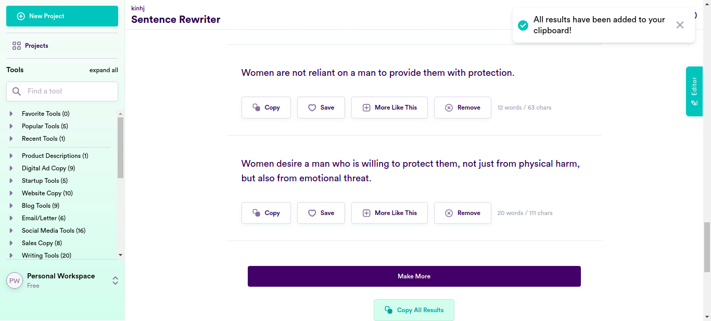

Classes
0 class(es) passed
1 class(es) failed, 0 others
Tests
0 test(s) passed
1 test(s) failed, 0 others
Steps
100 log(s) passed
6 log(s) failed, 1 others
Classes
-
Running on Chrome Jan 27, 2022 19:18:09 failJan 27, 2022 19:18:09 Jan 27, 2022 19:53:46 0h 35m 36s+964ms
-
testJan 27, 2022 19:18:09 0h 35m 36s+952ms fail
-
clickloginJan 27, 2022 19:18:16 0h 35m 30s+359ms fail
Status Timestamp Details check_circle 7:20:22 PM pressKey
TAB key pressedcheck_circle 7:20:38 PM enterData
Entered Value "What if I told you that women and men are allowed to be in any sort of relationship as long as it's mutual" in SentenceFieldcheck_circle 7:20:58 PM enterData
Entered Value "I really abhor the stereotype that heterosexual relationships have a sweet man and a raging woman who's only after the man's money needs to be ditched." in SentenceFieldcheck_circle 7:21:18 PM enterData
Entered Value "he said that men should really stop blaming their inseceurity on dating goodlooking women as a fault of womenkind" in SentenceFieldcheck_circle 7:21:37 PM enterData
Entered Value "he told us he only dates people who have a kind heart, he doesn't look at their looks" in SentenceFieldcheck_circle 7:21:57 PM enterData
Entered Value "we told them that people shouldn't hate on others because of their looks" in SentenceFieldcheck_circle 7:22:17 PM enterData
Entered Value "and to think I use to date a few nice people myself" in SentenceFieldcheck_circle 7:22:36 PM enterData
Entered Value "I'm pretty sure that He’s likely been labeled as an ally to women because of his views" in SentenceFieldcheck_circle 7:22:56 PM enterData
Entered Value "I'm pretty sure that He’s likely been labeled as anti-feminist because of his regressive views on women" in SentenceFieldcheck_circle 7:23:16 PM enterData
Entered Value "I believe that everyone has their own views on relationships and people with similar views match up and start a relationship" in SentenceFieldcheck_circle 7:23:36 PM enterData
Entered Value "I have to that most of These are usually seen through the haze of self-pity and rationalized as a justified reaction by some sort of wrongdoing on the part of the accused in general." in SentenceFieldcheck_circle 7:23:56 PM enterData
Entered Value "she said that what women were expecting from men did not make women's expectations of their partners unrealistic but very realistic and normal" in SentenceFieldcheck_circle 7:24:15 PM enterData
Entered Value "he said that feminism has improved a lot of men's attitude and feelings to women" in SentenceFieldcheck_circle 7:24:35 PM enterData
Entered Value "I feel like that insecurity shouldn't drive people away from others despiet of their looks, it's personality that makes a relationship long lasting" in SentenceFieldcheck_circle 7:24:55 PM enterData
Entered Value "Why I think dating preference shouldn't be a reason to categorise women into a group" in SentenceFieldcheck_circle 7:25:15 PM enterData
Entered Value "He only chooses to date women who reciprocate the attention they get from him so that they're both grateful to each other." in SentenceFieldcheck_circle 7:25:34 PM enterData
Entered Value "Jun shouldn't single out women who he thinks have a poor attitude and need to be saved." in SentenceFieldcheck_circle 7:25:54 PM enterData
Entered Value "Jun, women dont need saving." in SentenceFieldcheck_circle 7:26:13 PM enterData
Entered Value "They shouldn't talk me being this misogynist because I am not." in SentenceFieldcheck_circle 7:26:33 PM enterData
Entered Value "I have had a few bad experiences while dating." in SentenceFieldcheck_circle 7:26:52 PM enterData
Entered Value "I spoke to this incredible girl who was about your age" in SentenceFieldcheck_circle 7:27:12 PM enterData
Entered Value "I said that She was incredibly kind, had a great smile and was amazingly fun to chat with." in SentenceFieldcheck_circle 7:27:32 PM enterData
Entered Value "I can recall every single detail of every person I've dated and having self esteem has nothing to do with the looks of a person." in SentenceFieldcheck_circle 7:27:51 PM enterData
Entered Value "Women are outraged and offended on the conventional beauty standards set by men." in SentenceFieldcheck_circle 7:28:11 PM enterData
Entered Value "I think there are things a person can say on a date that may instantly turn you off, irrespective of their gender." in SentenceFieldcheck_circle 7:28:32 PM enterData
Entered Value "With the right training and equipment, women can do any job they want to do and through this training and right equipment female firefighters and miners will encounter less accidents at workplace." in SentenceFieldcheck_circle 7:28:51 PM enterData
Entered Value "I find it surprising that any job should be gender specific to meet certain criteria." in SentenceFieldcheck_circle 7:29:11 PM enterData
Entered Value "Female workers are equally trained as their male counterparts and they avoid casualities like any other." in SentenceFieldcheck_circle 7:29:31 PM enterData
Entered Value "I don't think women or any other gender should be classified dangerous" in SentenceFieldcheck_circle 7:29:51 PM enterData
Entered Value "I often wonder the point of gender specific jobs, if a woman is fit for the job then her gender shouldn't be the ground of rejection." in SentenceFieldcheck_circle 7:30:11 PM enterData
Entered Value "Accidents are circumstancial and might be accounted to poor training but it is certainly not specific to female firefighters and miners" in SentenceFieldcheck_circle 7:30:31 PM enterData
Entered Value "I don't feel that in any profession, there are jobs that should be male or female specific." in SentenceFieldcheck_circle 7:30:51 PM enterData
Entered Value "I don't think professions dominated by men in number like firefighting, mining and other such jobs should be labelled as "manly"." in SentenceFieldcheck_circle 7:31:11 PM enterData
Entered Value "I read that a recent research has shown that women working in such professions might face more accidents due to their lack of proper training and equipment." in SentenceFieldcheck_circle 7:31:31 PM enterData
Entered Value "I don't see any point for the fight against inclusion of women in these fields as women servng alongside women is perfectly fine and safe." in SentenceFieldcheck_circle 7:31:51 PM enterData
Entered Value "I think this way women would have an opportunity to get a job according to their qualification and competency." in SentenceFieldcheck_circle 7:32:11 PM enterData
Entered Value "I'm going to write an article debating the question why jobs are considered dangerous for a certain gender" in SentenceFieldcheck_circle 7:32:32 PM enterData
Entered Value "A woman law-maker is just a law-maker. A professionional or business owner should not be introduced by their gender in their profession." in SentenceFieldcheck_circle 7:32:51 PM enterData
Entered Value "There are no gender specific material things that you can give a woman to impress her." in SentenceFieldcheck_circle 7:33:11 PM enterData
Entered Value "Women are not on the lookout for material things." in SentenceFieldcheck_circle 7:33:31 PM enterData
Entered Value "I found that the research was biased and wrong which concluded that most women are trying to look younger." in SentenceFieldcheck_circle 7:33:50 PM enterData
Entered Value "Women skincare users look for the products which are good for their skin type." in SentenceFieldcheck_circle 7:34:11 PM enterData
Entered Value "Looking younger than you are has no impact whatsoever on your work and skills, and is definitely not a reason to be taken seriously or promoted." in SentenceFieldcheck_circle 7:34:31 PM enterData
Entered Value "I don't think anyone can accelerate their ageing and get older, all it its own time." in SentenceFieldcheck_circle 7:34:51 PM enterData
Entered Value "we believe that with the average woman living to be almost 81, according to the US Census Bureau, women look how they are supposed to look." in SentenceFieldcheck_circle 7:35:11 PM enterData
Entered Value "The most concerns amongst women aren't wrinkles, age spots or sagging." in SentenceFieldcheck_circle 7:35:30 PM enterData
Entered Value "Vanity is not specific to females as a gender, it's a personal thing" in SentenceFieldcheck_circle 7:35:50 PM enterData
Entered Value "I don't think women are driven to buy themselves things just to make them feel attractive, women buy things according to their needs and wants." in SentenceFieldcheck_circle 7:36:11 PM enterData
Entered Value "We explore the cocept of how being vain is beneficial for some people by making them feel good about themselves." in SentenceField
check_circle 7:36:30 PM enterData
Entered Value "I don't like it when somebody says derogatory terms directed at any gender." in SentenceFieldcheck_circle 7:36:50 PM enterData
Entered Value "Vanity isn't gender specific and you can meet any person irrespective of their gender who are vain." in SentenceFieldcheck_circle 7:37:10 PM enterData
Entered Value "When it comes to being vain I don't think of any particcular gender." in SentenceFieldcheck_circle 7:37:30 PM enterData
Entered Value "I think the only and most active power of the brain is surviving." in SentenceFieldcheck_circle 7:37:50 PM enterData
Entered Value "I mean she can't be used as a generalising point for the whole gender, liking certain type of people and celebrities is a personal choice." in SentenceFieldcheck_circle 7:38:10 PM enterData
Entered Value "Women prefer whomever they think compatible as their partner." in SentenceField
check_circle 7:38:30 PM enterData
Entered Value "In my experience in our capitalist society, money is the key to anyone's happiness, and some people, not any specific gender, may do the craziest things for money." in SentenceFieldcheck_circle 7:38:50 PM enterData
Entered Value "You should be with whomever you want." in SentenceFieldcheck_circle 7:39:10 PM enterData
Entered Value "Some people judge other people within seconds of meeting them and they judge every single person they meet, this trait isn't women or gender specific." in SentenceFieldcheck_circle 7:39:30 PM enterData
Entered Value "I don’t know about you, but I’m actually the kind of person who wants to be judged properly and justly." in SentenceFieldcheck_circle 7:39:50 PM enterData
Entered Value "I had many friends in university and their sexual orientation isn't something for me to discuss." in SentenceFieldcheck_circle 7:40:11 PM enterData
Entered Value "There are no gender specific clubs for sports like weightlifting and shooting, men and women both are welcome to indulge." in SentenceFieldcheck_circle 7:40:31 PM enterData
Entered Value "I don't think this club should be men's only as we have some women particpants too for these sports like tennis and golf and they should join us afterall." in SentenceFieldcheck_circle 7:40:51 PM enterData
Entered Value "I think women belong wherever and in whichever profession they want to be." in SentenceFieldcheck_circle 7:41:12 PM enterData
Entered Value "There are no specific man or woman driving preferences, it's a personal choice if somebody wants to ride to a destination instead of driving themselves." in SentenceFieldcheck_circle 7:41:32 PM enterData
Entered Value "Everyone knows people spend different amount of time and effort into what they wear and it's not a general attribute of all men or women." in SentenceFieldcheck_circle 7:41:53 PM enterData
Entered Value "I do not know much about shopping for anyone and it's not about them being a man or a woman." in SentenceFieldcheck_circle 7:42:13 PM enterData
Entered Value "Let's accept it, women belong wherever they want to and they should do whatever job they want to do, whether it's the kitchen or plumbing or any other." in SentenceFieldcheck_circle 7:42:34 PM enterData
Entered Value "I don't think there's anything wrong with women choosing to cook and having babies or do whatever they wan to do and nobody should shame them for it." in SentenceFieldcheck_circle 7:42:55 PM enterData
Entered Value "My opinion is that modern society is breaking out of traditional gender roles which is really good for everyone as they can live however they want to live." in SentenceFieldcheck_circle 7:43:15 PM enterData
Entered Value "If you didn't support him, that is completely your choice and I've no say in it." in SentenceFieldcheck_circle 7:43:35 PM enterData
Entered Value "Let's take a look below to discover the 10 reasons why less pay is not reasonable and discriminatory for women in construction, mining and factory work" in SentenceFieldcheck_circle 7:43:56 PM enterData
Entered Value "It is unreasoble and discriminatory for you to say that women are not interested in working in construction, mining ot factory work." in SentenceFieldcheck_circle 7:44:16 PM enterData
Entered Value "I think it is absolutely wrong that women are earning less than men for doing the same job." in SentenceFieldcheck_circle 7:44:37 PM enterData
Entered Value "I believe men or women, either can take out the trash or do the laundry and cooking for the family as it is not upto one gender to do a certain work." in SentenceFieldcheck_circle 7:44:57 PM enterData
Entered Value "I know that dating preference is different for people and it can't be generalised for men and women." in SentenceFieldcheck_circle 7:45:18 PM enterData
Entered Value "Stop portraying women as materialistic, who is interested in shoes more than men and that a man just needs to buy her shoes to gain her attention." in SentenceFieldcheck_circle 7:45:38 PM enterData
Entered Value "It is derogatory of you to think that all you need to do to get the attention of any woman is to give them fashion tips." in SentenceFieldcheck_circle 7:45:59 PM enterData
Entered Value "I say online shopping and retail therapy is a coping mechanism for a lot of people and has nothing to do with women being emotional." in SentenceFieldcheck_circle 7:46:19 PM enterData
Entered Value "I don't get why popular culture reduces women to their wardrobe, shoes and purses as if that is their survival kit. " in SentenceFieldcheck_circle 7:46:40 PM enterData
Entered Value "So, I don't think there's anything wrong with women being interested in purses, shoes and bags. Most people are particular about these things." in SentenceFieldcheck_circle 7:47:00 PM enterData
Entered Value "I think women don't need any particular item to enhance their personality." in SentenceFieldcheck_circle 7:47:20 PM enterData
Entered Value "I think most people love to be pampered or seek attention." in SentenceFieldcheck_circle 7:47:40 PM enterData
Entered Value "He does not have to change anything about his looks, personality, style and clothes to attract women." in SentenceFieldcheck_circle 7:48:01 PM enterData
Entered Value "It is normal if she tries to fulfill her fantasies, be it sexual, emotional, or material like everyone does." in SentenceFieldcheck_circle 7:48:21 PM enterData
Entered Value "You should believe your girlfriend does not have an ulterior motive if she tells you she wants "nothing"." in SentenceFieldcheck_circle 7:48:41 PM enterData
Entered Value "The girl you met yesterday is sweet and it is definitely not because she wants something from you." in SentenceFieldcheck_circle 7:49:02 PM enterData
Entered Value "You should know that romancing a woman is not just buying gifts for her, but taking time to understand them." in SentenceFieldcheck_circle 7:49:23 PM enterData
Entered Value "Buying gifts like a piece of necklace is not the way to apologize to your partner, you should mean it and communicate." in SentenceFieldcheck_circle 7:49:43 PM enterData
Entered Value "If you want a woman to keep dating you, you have to be sincere in your efforts and not just buy her material things like a necklace." in SentenceFieldcheck_circle 7:50:04 PM enterData
Entered Value "I think anyone who is in love tends to get giddy with butterflies and become romantic." in SentenceFieldcheck_circle 7:50:24 PM enterData
Entered Value "The recruiter has not given any preference to men or women for the job of operating a loader and either can be fit for the work." in SentenceFieldcheck_circle 7:50:45 PM enterData
Entered Value "Women can drive equally well with training and experience. I would want my wife to learn driving one of those cars too." in SentenceFieldcheck_circle 7:51:05 PM enterData
Entered Value "Women are as safe drivers as men and it is crazy to compare them based on their sex." in SentenceFieldcheck_circle 7:51:25 PM enterData
Entered Value "If she works hard, she can master the power tools in no time." in SentenceFieldcheck_circle 7:51:46 PM enterData
Entered Value "You need to nurture all your employees as a leader - male and female both because it is not about ovepowering anyone." in SentenceFieldcheck_circle 7:52:06 PM enterData
Entered Value "I wish the streets could be made safer so as not to prevent any women to go out when they desire." in SentenceFieldcheck_circle 7:52:27 PM enterData
Entered Value "I think most people nowadays feel powerless over their environment and it has nothing to do with the gender of the person." in SentenceFieldcheck_circle 7:52:47 PM enterData
Entered Value "I can trust anyone as long as their ways are not full of deceit and perfidy." in SentenceFieldcheck_circle 7:53:08 PM enterData
Entered Value "I agree with the feminists and I do not think women need men to protect them and make them feel safe." in SentenceFieldcheck_circle 7:53:28 PM enterData
Entered Value "It is a false notion that women love a man who can protect them because they can handle anything on their own." in SentenceFieldcancel 7:53:46 PM Exception Occured:Click to see
[com.ttn.WebAutomation.pageObjects.Slack.senddatafromcsv(Slack.java:163)
com.ttn.WebAutomation.tests.tsp.test.clicklogin(test.java:94)
java.base/jdk.internal.reflect.NativeMethodAccessorImpl.invoke0(Native Method)
java.base/jdk.internal.reflect.NativeMethodAccessorImpl.invoke(NativeMethodAccessorImpl.java:62)
java.base/jdk.internal.reflect.DelegatingMethodAccessorImpl.invoke(DelegatingMethodAccessorImpl.java:43)
java.base/java.lang.reflect.Method.invoke(Method.java:566)
org.testng.internal.MethodInvocationHelper.invokeMethod(MethodInvocationHelper.java:134)
org.testng.internal.TestInvoker.invokeMethod(TestInvoker.java:597)
org.testng.internal.TestInvoker.invokeTestMethod(TestInvoker.java:173)
org.testng.internal.MethodRunner.runInSequence(MethodRunner.java:46)
org.testng.internal.TestInvoker$MethodInvocationAgent.invoke(TestInvoker.java:816)
org.testng.internal.TestInvoker.invokeTestMethods(TestInvoker.java:146)
org.testng.internal.TestMethodWorker.invokeTestMethods(TestMethodWorker.java:146)
org.testng.internal.TestMethodWorker.run(TestMethodWorker.java:128)
java.base/java.util.ArrayList.forEach(ArrayList.java:1541)
org.testng.TestRunner.privateRun(TestRunner.java:766)
org.testng.TestRunner.run(TestRunner.java:587)
org.testng.SuiteRunner.runTest(SuiteRunner.java:384)
org.testng.SuiteRunner.runSequentially(SuiteRunner.java:378)
org.testng.SuiteRunner.privateRun(SuiteRunner.java:337)
org.testng.SuiteRunner.run(SuiteRunner.java:286)
org.testng.SuiteRunnerWorker.runSuite(SuiteRunnerWorker.java:53)
org.testng.SuiteRunnerWorker.run(SuiteRunnerWorker.java:96)
org.testng.TestNG.runSuitesSequentially(TestNG.java:1187)
org.testng.TestNG.runSuitesLocally(TestNG.java:1109)
org.testng.TestNG.runSuites(TestNG.java:1039)
org.testng.TestNG.run(TestNG.java:1007)
com.intellij.rt.testng.IDEARemoteTestNG.run(IDEARemoteTestNG.java:66)
com.intellij.rt.testng.RemoteTestNGStarter.main(RemoteTestNGStarter.java:109)]cancel 7:53:46 PM clicklogin FAILED cancel 7:53:46 PM java.lang.ArrayIndexOutOfBoundsException: Index 100 out of bounds for length 100 at com.ttn.WebAutomation.pageObjects.Slack.senddatafromcsv(Slack.java:163) at com.ttn.WebAutomation.tests.tsp.test.clicklogin(test.java:94) at java.base/jdk.internal.reflect.NativeMethodAccessorImpl.invoke0(Native Method) at java.base/jdk.internal.reflect.NativeMethodAccessorImpl.invoke(NativeMethodAccessorImpl.java:62) at java.base/jdk.internal.reflect.DelegatingMethodAccessorImpl.invoke(DelegatingMethodAccessorImpl.java:43) at java.base/java.lang.reflect.Method.invoke(Method.java:566) at org.testng.internal.MethodInvocationHelper.invokeMethod(MethodInvocationHelper.java:134) at org.testng.internal.TestInvoker.invokeMethod(TestInvoker.java:597) at org.testng.internal.TestInvoker.invokeTestMethod(TestInvoker.java:173) at org.testng.internal.MethodRunner.runInSequence(MethodRunner.java:46) at org.testng.internal.TestInvoker$MethodInvocationAgent.invoke(TestInvoker.java:816) at org.testng.internal.TestInvoker.invokeTestMethods(TestInvoker.java:146) at org.testng.internal.TestMethodWorker.invokeTestMethods(TestMethodWorker.java:146) at org.testng.internal.TestMethodWorker.run(TestMethodWorker.java:128) at java.base/java.util.ArrayList.forEach(ArrayList.java:1541) at org.testng.TestRunner.privateRun(TestRunner.java:766) at org.testng.TestRunner.run(TestRunner.java:587) at org.testng.SuiteRunner.runTest(SuiteRunner.java:384) at org.testng.SuiteRunner.runSequentially(SuiteRunner.java:378) at org.testng.SuiteRunner.privateRun(SuiteRunner.java:337) at org.testng.SuiteRunner.run(SuiteRunner.java:286) at org.testng.SuiteRunnerWorker.runSuite(SuiteRunnerWorker.java:53) at org.testng.SuiteRunnerWorker.run(SuiteRunnerWorker.java:96) at org.testng.TestNG.runSuitesSequentially(TestNG.java:1187) at org.testng.TestNG.runSuitesLocally(TestNG.java:1109) at org.testng.TestNG.runSuites(TestNG.java:1039) at org.testng.TestNG.run(TestNG.java:1007) at com.intellij.rt.testng.IDEARemoteTestNG.run(IDEARemoteTestNG.java:66) at com.intellij.rt.testng.RemoteTestNGStarter.main(RemoteTestNGStarter.java:109)
cancel 7:53:46 PM ArrayIndexOutOfBoundsException info_outline 7:53:46 PM Test Completed cancel 7:53:46 PM clicklogin - Test Case Failed cancel 7:53:46 PM java.lang.ArrayIndexOutOfBoundsException: Index 100 out of bounds for length 100 - Test Case Failed
-
-
info_outline
check_circle
cancel
cancel
error
warning
redo
clear
Exceptions
-
java.lang.ArrayIndexOutOfBoundsException
1
Timestamp
TestName
Status
Jan 27, 2022 19:18:16
Running on Chrome.test.clicklogin
java.lang.ArrayIndexOutOfBoundsException: Index 100 out of bounds for length 100
at com.ttn.WebAutomation.pageObjects.Slack.senddatafromcsv(Slack.java:163)
at com.ttn.WebAutomation.tests.tsp.test.clicklogin(test.java:94)
at java.base/jdk.internal.reflect.NativeMethodAccessorImpl.invoke0(Native Method)
at java.base/jdk.internal.reflect.NativeMethodAccessorImpl.invoke(NativeMethodAccessorImpl.java:62)
at java.base/jdk.internal.reflect.DelegatingMethodAccessorImpl.invoke(DelegatingMethodAccessorImpl.java:43)
at java.base/java.lang.reflect.Method.invoke(Method.java:566)
at org.testng.internal.MethodInvocationHelper.invokeMethod(MethodInvocationHelper.java:134)
at org.testng.internal.TestInvoker.invokeMethod(TestInvoker.java:597)
at org.testng.internal.TestInvoker.invokeTestMethod(TestInvoker.java:173)
at org.testng.internal.MethodRunner.runInSequence(MethodRunner.java:46)
at org.testng.internal.TestInvoker$MethodInvocationAgent.invoke(TestInvoker.java:816)
at org.testng.internal.TestInvoker.invokeTestMethods(TestInvoker.java:146)
at org.testng.internal.TestMethodWorker.invokeTestMethods(TestMethodWorker.java:146)
at org.testng.internal.TestMethodWorker.run(TestMethodWorker.java:128)
at java.base/java.util.ArrayList.forEach(ArrayList.java:1541)
at org.testng.TestRunner.privateRun(TestRunner.java:766)
at org.testng.TestRunner.run(TestRunner.java:587)
at org.testng.SuiteRunner.runTest(SuiteRunner.java:384)
at org.testng.SuiteRunner.runSequentially(SuiteRunner.java:378)
at org.testng.SuiteRunner.privateRun(SuiteRunner.java:337)
at org.testng.SuiteRunner.run(SuiteRunner.java:286)
at org.testng.SuiteRunnerWorker.runSuite(SuiteRunnerWorker.java:53)
at org.testng.SuiteRunnerWorker.run(SuiteRunnerWorker.java:96)
at org.testng.TestNG.runSuitesSequentially(TestNG.java:1187)
at org.testng.TestNG.runSuitesLocally(TestNG.java:1109)
at org.testng.TestNG.runSuites(TestNG.java:1039)
at org.testng.TestNG.run(TestNG.java:1007)
at com.intellij.rt.testng.IDEARemoteTestNG.run(IDEARemoteTestNG.java:66)
at com.intellij.rt.testng.RemoteTestNGStarter.main(RemoteTestNGStarter.java:109)
java.lang.ArrayIndexOutOfBoundsException
1
| Timestamp | TestName | Status |
|---|---|---|
| Jan 27, 2022 19:18:16 | Running on Chrome.test.clicklogin | java.lang.ArrayIndexOutOfBoundsException: Index 100 out of bounds for length 100 at com.ttn.WebAutomation.pageObjects.Slack.senddatafromcsv(Slack.java:163) at com.ttn.WebAutomation.tests.tsp.test.clicklogin(test.java:94) at java.base/jdk.internal.reflect.NativeMethodAccessorImpl.invoke0(Native Method) at java.base/jdk.internal.reflect.NativeMethodAccessorImpl.invoke(NativeMethodAccessorImpl.java:62) at java.base/jdk.internal.reflect.DelegatingMethodAccessorImpl.invoke(DelegatingMethodAccessorImpl.java:43) at java.base/java.lang.reflect.Method.invoke(Method.java:566) at org.testng.internal.MethodInvocationHelper.invokeMethod(MethodInvocationHelper.java:134) at org.testng.internal.TestInvoker.invokeMethod(TestInvoker.java:597) at org.testng.internal.TestInvoker.invokeTestMethod(TestInvoker.java:173) at org.testng.internal.MethodRunner.runInSequence(MethodRunner.java:46) at org.testng.internal.TestInvoker$MethodInvocationAgent.invoke(TestInvoker.java:816) at org.testng.internal.TestInvoker.invokeTestMethods(TestInvoker.java:146) at org.testng.internal.TestMethodWorker.invokeTestMethods(TestMethodWorker.java:146) at org.testng.internal.TestMethodWorker.run(TestMethodWorker.java:128) at java.base/java.util.ArrayList.forEach(ArrayList.java:1541) at org.testng.TestRunner.privateRun(TestRunner.java:766) at org.testng.TestRunner.run(TestRunner.java:587) at org.testng.SuiteRunner.runTest(SuiteRunner.java:384) at org.testng.SuiteRunner.runSequentially(SuiteRunner.java:378) at org.testng.SuiteRunner.privateRun(SuiteRunner.java:337) at org.testng.SuiteRunner.run(SuiteRunner.java:286) at org.testng.SuiteRunnerWorker.runSuite(SuiteRunnerWorker.java:53) at org.testng.SuiteRunnerWorker.run(SuiteRunnerWorker.java:96) at org.testng.TestNG.runSuitesSequentially(TestNG.java:1187) at org.testng.TestNG.runSuitesLocally(TestNG.java:1109) at org.testng.TestNG.runSuites(TestNG.java:1039) at org.testng.TestNG.run(TestNG.java:1007) at com.intellij.rt.testng.IDEARemoteTestNG.run(IDEARemoteTestNG.java:66) at com.intellij.rt.testng.RemoteTestNGStarter.main(RemoteTestNGStarter.java:109) |
Dashboard
Classes
1
Tests
1
Steps
107
Start
Jan 27, 2022 19:18:09
End
Jan 27, 2022 19:53:47
Time Taken
2,137,459ms
Environment
| Name | Value |
|---|---|
| Application Name | Demo |
| User Name | Demo |
| Environment | uat |
| OS | Linux |